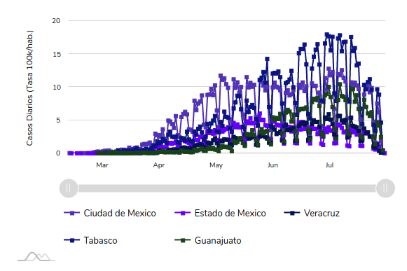
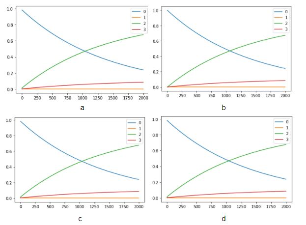
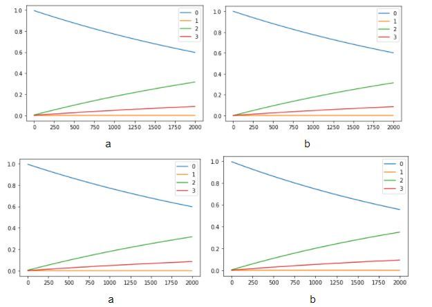
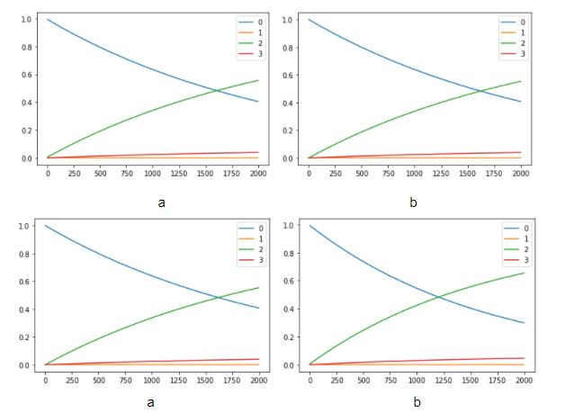
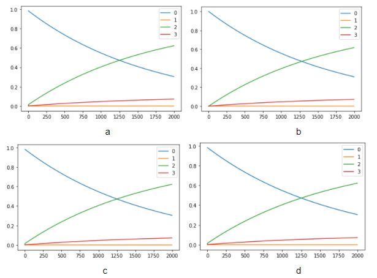
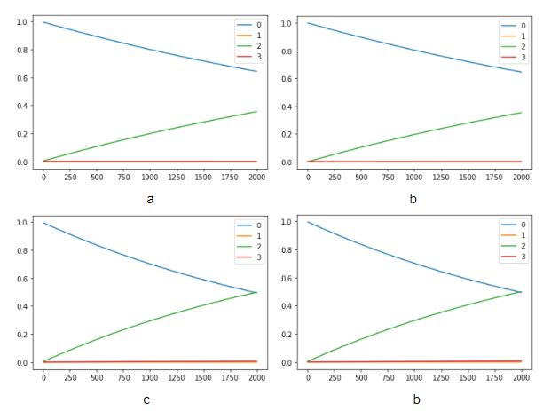

A continuación en este apartado podrás encontrar las gráficas representativas de acuerdo a el comportamiento del número de casos por estado.
Las siguientes gráficas se realizaron con el análisis de solo los 10 estados de nuestro top 10, (los 5 estados con mayor número de contagios y los 5 estados con menor número de casos.)
Se observa que el escenario uno con respecto a la decisión del gobierno federal, en la fecha de inicio de la jornada nacional de sana distancia, no cambia la dinámica de cada uno de los estados definidos.
Gráfica 1. Casos diarios de los 5 estados con el mayor número de contagios a nivel nacional
La ciudad de México es el estado más poblado de la República Mexicana, a nivel mundial es considerada una de las ciudades con mayor número de habitantes y la cantidad de movimiento dentro de esta metrópoli es gigantesca. No es sorpresa que hasta la fecha sea el lugar con el mayor número de casos confirmados a SARS-Cov-2 en todo el país. El primer caso reportado en la Ciudad de México fue el 28 de febrero de este año, a partir de ahí el número de contagios fue en aumento y desde entonces ha ocupado el primer lugar a nivel nacional en casos positivos a la enfermedad Covid-19. Pero, ¿qué hubiera pasado si la jornada nacional de Sana distancia se hubiese implementado semanas antes o semanas después al 23 de marzo?, veámos el siguiente análisis:

Solamente por debajo de la Ciudad de México, el Estado de México es la segunda entidad con el mayo número de habitantes en el país. Su elevada población, su conexión tan estrecha con la Ciudad de México y el alto índice de tránsito diario hicieron de esta entidad el segundo lugar con el mayor número de contagios a nivel nacional. La pregunta de este trabajo, ¿Hubiera cambiado en algo la situacion si las medidas tomadas por el gobierno federal se hubiesen implementado antes o después de la fecha en la que se hizo? Veamos qué dicen nuestros resultados.

Actualmente Guanajuato ha presentado casos confirmados de transmisión comunitaria en los 46 municipios que existen en la entidad, lo que representa el 100 por ciento del territorio. A pesar de no ser una gran metrópoli es el tercer estado con mayor número de casos positivos por covid-19.
En las últimas semanas, Tabasco ha tenido una evolución favorable de la epidemia del COVID-19, que se ha reflejado en la disminución de nuevos casos, pacientes activos y hospitalizados. Pese a ello, actualmente ocupa el cuarto lugar dentro de los estados con mayor número de casos acumulados en el país.
Veracruz ocupa el quinto lugar de los estados con mayor número de casos reportados. Con la finalidad de frenar la propagación del COVID-19, a través de la Dirección de Protección contra Riesgos Sanitarios y en coordinación con las 11 jurisdicciones del estado se mantiene la estrategia de prevención y difusión de acciones de cuidado individual, familiar y comunitario, principalmente en municipios con mayor acumulación de casos sospechosos y positivos.
